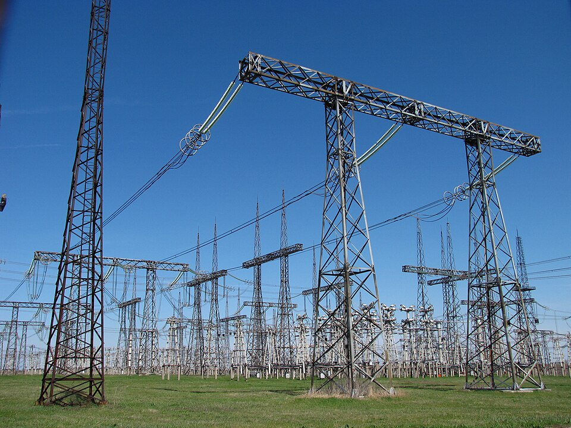

SUPERVISIÓN EN CAMPO • MANTENIMIENTO INDUSTRIALBAJA • MEDIA • ALTA TENSIÓN
INGENIERÍA · XMXM Consultando datos publicados…PETRÓLEO Consultando referencia COP/barril…LUGAR Autorizar ubicaciónTEMPERATURA —HUMEDAD RELATIVA —VIENTO —RACHAS —DIRECCIÓN —ALTITUD DEL TERRENO —PRESIÓN AL NIVEL DEL MAR —NUBOSIDAD —PRECIPITACIÓN PRÓX. 1 H —PRONÓSTICO MET —
CONDICIONES LOCALES
¿Desea compartir su ubicación para consultar el clima?
Con su autorización, el navegador solicitará su ubicación. Se enviarán coordenadas aproximadas a MET Norway y BigDataCloud para mostrar lugar, altitud del terreno, temperatura, humedad, viento y otras condiciones del pronóstico.
Las coordenadas se usan durante esta sesión y no se guardan en el sitio. Puede consultar los datos de XM sin compartir ubicación. El pronóstico no sustituye mediciones de campo.
FUENTES PÚBLICAS · DATOS PUBLICADOS
Indicadores técnicos del sistema eléctrico
Consultando el último conjunto de datos publicado.
Se consultan los indicadores técnicos agregados del Sistema disponibles en la API pública de XM. No equivale a todo el histórico ni a todas las desagregaciones. Los datos conservan sus unidades y período de publicación.
Indicador
Valor
Fecha / período
Catálogo técnico publicado por XM
Variables y desagregaciones del catálogo público. La tira muestra los agregados del Sistema que hayan respondido a la consulta.
Brent y WTI: referencias spot EIA/FRED convertidas a COP por barril con TRM oficial. Las fechas pueden diferir; no son precios de venta local ni cotizaciones en tiempo real.
No se ha enviado ningún mensaje adicional por WhatsApp automáticamente.

Sistemas eléctricos de potencia
Créditos y derechos de imágenes
Las fotografías externas se utilizan como referencias de entornos eléctricos industriales. Sus fuentes y condiciones de uso se relacionan a continuación.